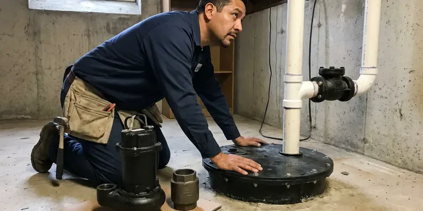

Water Heater Expansion Tank Installation in Minnetonka, MN
Add years to your water heater with an expansion tank from CNV Plumbing in Minnetonka, MN, usually installed same day.
- Same-Day Installs
- Licensed Plumbers
- Precharged to Your Pressure
- Same-Day Installation Available

Expansion Tank Installation for Your Home in Minnetonka, MN
Call now and we will check your pressure, size the right tank and install it the same day most of the time.
Water Heater Expansion Tank Installation in Minnetonka, MN
High incoming pressure and pressure regulators are common in Minnetonka homes. Water grows in volume as it heats from about 60 to 120 degrees, and without an expansion tank that extra water pushes system pressure up until the relief valve on the heater opens. One visit solves it.
Some of what we do:
- Closed system diagnosis
- Expansion tank sizing and installation
- Compliance with local plumbing codes

Additional Plumbing Installation Services in Minnetonka, MN
We install water heaters, pumps, lines, and fixtures across Minnetonka, MN with precision workmanship that meets every local code.


Customers
Why Choose CNV Plumbing for Water Heater Expansion Tank Installation in Minnetonka, MN?
Sizing and charging decide whether the tank works. We measure your pressure instead of grabbing whatever is on the shelf, and we set the air charge to match it, because a tank charged at the factory 40 psi on a 65 psi system loses most of its useful capacity. Get the charge right and it works.
- Full System Check, We check the PRV and relief valve while we are there.
- Extended Lifespan, Fewer pressure spikes means a longer-lived water heater.
- Water Heater Lifespan, Smoothing out pressure swings keeps welds and fittings from wearing early.
Citywide Coverage
No matter where you live in Minnetonka, a trained technician can be there quickly. Bringing the system up to code is part of the visit, which usually means the tank, a proper strap and sometimes a new relief valve if the old one has been weeping for a long time. We replace worn relief valves.
Experienced Team
Tight closets and attic platforms do not slow our plumbers down. They can fit a tank in tight spots without stressing the pipe, using a short nipple and a bracket when the wall is close, or a horizontal mount where the manufacturer allows it. Mounting options vary by brand.
Safety-First Approach
Pressure testing and secure mounting are part of every install. Full of water, a 2 gallon tank weighs about 17 pounds, so we strap or bracket it to the structure instead of letting it hang on a 3/4 inch nipple that will eventually crack. The strap is cheap.
Trusted Certified Minnetonka Plumbing Services Professionals
At CNV Plumbing, we take pride in licensed, certified plumbing services throughout Minnetonka, MN. Those papers on the wall mean something. Our plumbers hold recognized industry credentials, and they follow strict safety and quality rules on every repair, installation and maintenance call we run.
Call Us Now PHCC Plumbing Contractor Recognition
PHCC Plumbing Contractor Recognition Better Business Bureau (BBB) Accreditation
Better Business Bureau (BBB) Accreditation Angi Certified Pro
Angi Certified Pro ISO 9001 Quality Management Certification
ISO 9001 Quality Management CertificationThe Expansion Tank Work We Do in Minnetonka, MN
Expansion Tank for Tankless Water Heaters in Minnetonka, MN
Recirculation pumps keep hot water in the lines, which means more heated water and more expansion. A small expansion tank often makes sense on a tankless with a recirc loop, especially in Minnetonka, MN homes with a PRV or a meter check valve that already closed the system. No tank goes in without a reason.

Residential Expansion Tank Services in Minnetonka
Two gallons of tank covers most 40 and 50 gallon heaters at normal house pressure. The manufacturer's sizing chart sets the tank size, using your heater's capacity, your static pressure and your temperature setting, because a tank that is too small over-flexes its diaphragm and fails early in Minnetonka homes. Bigger is not always needed.
Commercial and Multi-Unit Expansion Tanks in Minnetonka
Apartment buildings and offices with several heaters need tanks sized for the whole hot water system. We include storage tanks and recirculation loops in the math, floor-mount the larger tanks with proper supports, and plan the work to keep hot water interruptions short for tenants in Minnetonka, MN. We can come after hours.
Code-Compliant Installations in Minnetonka, MN
Minnesota has a statewide plumbing code based on the Uniform Plumbing Code, and plumbers must be licensed by the state. Local plumbing codes often require an expansion tank whenever a backflow device or PRV creates a closed system. Permits get pulled when they apply, and the local rule gets followed, so the work passes inspection in Minnetonka, MN and nothing comes back to bite you when the house sells. It helps if you ever file a claim.
Watts Expansion Tank Installation in Minnetonka, MN
Watts makes a potable expansion tank line we install often, the PLT series. The tanks come precharged and we adjust them on site, which matters because the factory charge rarely matches the actual static pressure in a Minnetonka, MN home. We use a simple tire gauge.
Expansion Tank Installation Cost Comparison in Minnetonka, MN
Adding the tank during a water heater replacement is the cheapest time to do it. With the water off and the pipes open, it is a small add, while a standalone install costs a bit more in labor, and attic work, a larger tank or a new PRV push the total higher in Minnetonka. You get the price before we start.
Commercial Expansion Tank Solutions in Minnetonka, MN
Commercial water heaters move far more water, so the expansion volume is bigger too. Total system volume, storage tanks and all, sets the tank size, then floor-mount it with proper supports and schedule the install around your business hours in Minnetonka, MN. Hot water stays on as long as possible.

Expansion Tank Replacement & Upgrades in Minnetonka
A waterlogged expansion tank does nothing at all. The old diaphragm tears and the tank fills with water, and from then on your system acts like it has no tank, so we replace it with a new, correctly sized unit and upsize if your household or heater has changed since the first one went in at your Minnetonka home. Most swaps take under an hour.
Water Heater Expansion Tank Installation Near Me in Minnetonka, MN
Protecting your plumbing does not have to wait. We can usually have a local plumber there in a day or two, measure your pressure and tell you whether thermal expansion is the cause of the drip in Minnetonka. A pressure check is quick.
Our plumbers work in Minnetonka every day and know how local water pressure and regulators affect heaters. We get the sizing right the first time because of it, and you get a quick, clean install and a system that stays balanced long after we leave. Steady pressure is the point.
CNV Plumbing at a Glance
- Fully licensed plumbing team covering Minnetonka, MN
- Same-day appointments and 24/7 emergency response
- Upfront, flat-rate pricing before work begins
- 4.8-star rated by 501+ Minnesota customers
Minnetonka Map
Minnetonka Information
- Population
- 52,463
- Area codes
- 952/763/612
- Service area
- Minnetonka and towns within a 40 mile drive
- Nearby
- St. Louis Park, Edina, Eden Prairie, Plymouth
Scale buildup shortens water heater life and clogs aerators, which is why water softeners are so common in the state. In Minnetonka, MN, a water heater expansion tank takes up the extra volume when water heats, protecting the heater and the pipes.
Talk to a Plumber
Reach out to CNV Plumbing for honest, reliable plumbing from people who know the trade in Minnetonka, MN.
Our Specialized Plumbing Services in Minnetonka, MN
At CNV Plumbing, you get every kind of plumbing service from one company across Minnetonka, MN. From leak detection to full system installs, our team works fast and charges fair prices on homes and commercial properties alike. Take a look at our core services below:


What an Expansion Tank Install Looks Like in Minnetonka, MN
Expansion tank installs are quick, and we keep the mess to a minimum in Minnetonka.
Request a Quote
Call (612) 712-9569 and tell us about your water heater and any symptoms like a dripping relief valve. We give you an upfront price.
Test and Size
We measure static pressure, check the PRV and relief valve, and pick the tank. The air charge is set to match your pressure.
Install and Verify
We install and support the tank on the cold supply, then run the heater through a cycle. Pressure has to stay stable.
Frequently Asked Questions About Water Heater Expansion Tank Installation in Minnetonka
Plan on $250 to $500 in Minnetonka for a typical expansion tank job. Final cost depends on tank size, install difficulty and any pipe changes, and we give you that number after looking at the heater and measuring your pressure on site. No surprises on the bill.
A standalone tank usually does not need a permit, though one is often included when it goes in with a new water heater. Local requirements get followed on every job.
Sometimes. Thermal expansion is usually minor on tankless because it holds so little water, but a closed system with a backflow preventer, a PRV or a recirculation loop can still call for one, and we check before recommending it. Some codes require it anyway.
Closed plumbing systems need somewhere to put expanded hot water. Without a tank, thermal expansion can damage the heater, pipes and fixtures, leading to leaks and early failure, and plenty of local codes in Minnesota require a tank for that reason. It is a small part.
About one to two hours for a typical install. That covers the pressure test, the install and a heating cycle check, and we keep the water off for as little of that as possible, usually under an hour. Attics can take longer.
Yes, a little. Have the air charge checked about once a year, ideally during water heater service, so it still matches your house pressure, which helps the tank and the heater both last longer. It is a five-minute check.
Watts, Amtrol and Zurn are the brands we install most. Each one makes potable tanks that hold a charge well, and our plumbers pick the model by your heater size and pressure, then explain why before installing anything. We only use potable tanks.
Permit rules vary in Minnetonka, and they often depend on whether the tank goes in with a new water heater. A standalone tank often needs no permit, but we check the local rules and advise you before work starts, and when it is part of a heater replacement the permit covers both. We handle the paperwork.
What Our Customers Say About Our Plumbing Experts

Marcus H.
Grease from the fryer line kept clogging the kitchen drain at my diner. CNV Plumbing hydro jetted the line after closing, showed me the buildup on camera, and set us up on a quarterly cleaning so it does not catch us on a Friday again.
Drain Cleaning · Edina, MN
Brian W.
I smelled gas behind the dryer and called right away. The plumber found a corroded flex connector, replaced it, and pressure tested the whole line before turning the gas back on. He let me watch the gauge hold steady for fifteen minutes.
Gas Line Repair · Bloomington, MNPaul B.
Our pit pump ran nonstop even in dry weather. The plumber found the check valve was stuck open, so the same water kept cycling back into the pit. New valve, new float switch, done in an hour. It runs quiet now.
Sump Pump · Bloomington, MN
Monica A.
Our water bill nearly doubled in one month with no change in how we used water. The tech checked the meter, heard the leak under the hallway with his equipment, and opened a hole about a foot square. Fixed the same day.
Slab Leak Repair · Minneapolis, MN
Emily R.
The shutoff valve under our kitchen sink snapped off in my hand on a Sunday morning. CNV Plumbing had someone out by early afternoon. He replaced both angle stops with quarter turn valves and showed me where our main shutoff was, which I honestly did not know.
Plumbing Repair · Plymouth, MNSofia M.
Two new toilets went in during one visit. The tech set them on new wax rings and swapped the old supply lines. He also noticed our bathroom faucet dripping and replaced the cartridge while he was there. No mess left behind.
Toilet Installation · St. Louis Park, MN